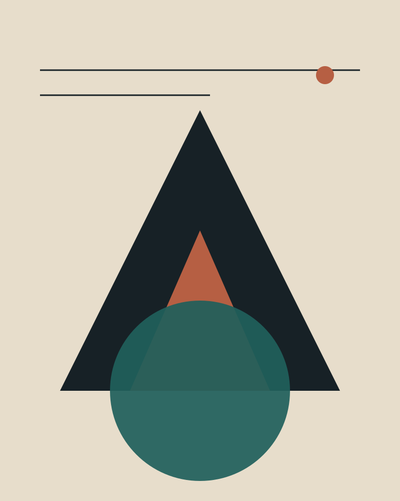

Tops / study 03
Fold Tote
EUR 38
A structured everyday tote with a fold-over top and a single interior pocket. The product, colour names and materials on this page are fictional and exist only to demonstrate a product-detail layout.
No order is created. No payment provider is contacted.
This page is a layout study for the Angular migration case study. It is not the original storefront, does not use original product photography and does not represent real stock or pricing.